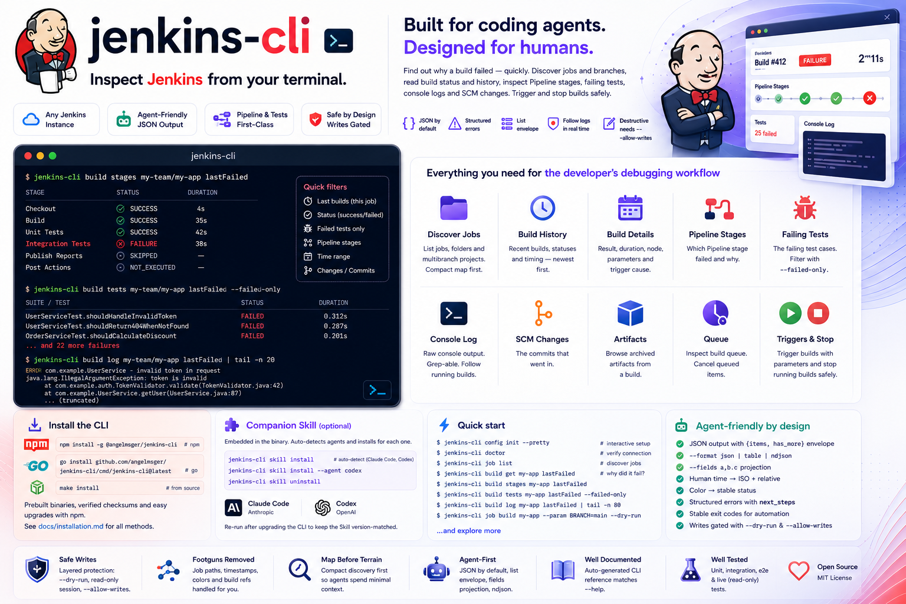

Inspect Jenkins from your terminal — built for coding agents, designed for humans.

Discover jobs, read build status, and find out why a build failed — with output a coding agent can act on.
job list maps jobs, folders and multibranch branches with their type and status; job get shows parameters, health and last-build pointers.
build stages shows which Pipeline stage broke, build tests --failed-only the failing cases, and build changes the commits that went in.
build log prints raw, grep-able console output; --follow streams a running build to completion via Jenkins' progressive log.
job list returns a compact, ?tree=-shaped view, so an agent sees the shape before pulling a full job or a large console log.
job build kicks off a build (with --param), build stop aborts one — each with --dry-run preview and read-only gating.
JSON by default, with structured errors — categories, exit codes and recovery next_steps a coding agent can branch on.
Human job paths map to Jenkins URLs, the color field becomes a stable status, and timestamps come back as an ISO instant plus a relative phrase.
kubectl-style named contexts in one config file. Switch the current server, or override per command with --use-context.
Your API token lives in the OS keychain, with a 0600 file fallback — never in the config file. Env vars for headless use.
Install with npm, then finish setup in two steps — deploy the Skill, then turn on shell completion.
# recommended — fetches the prebuilt binary for your platform
npm install -g @angelmsger/jenkins-cli
Other methods — go install, a source build, or a prebuilt binary from the
Releases page — are in the
README.
Then finish setup:
An jenkins Skill is embedded in the binary. It detects your coding agent — Claude Code, Codex — and installs for each:
$ jenkins-cli skill installCompletes subcommands and flag values. Load it once:
$ source <(jenkins-cli completion bash)Set up a server, find the job, then drill into why the build is red.
# interactive setup, then verify connectivity $ jenkins-cli config init --pretty $ jenkins-cli doctor # discover jobs, then look at one $ jenkins-cli job list $ jenkins-cli job get my-team/my-app # why is the latest build red? $ jenkins-cli build get my-app lastFailed $ jenkins-cli build stages my-app lastFailed $ jenkins-cli build tests my-app lastFailed --failed-only $ jenkins-cli build log my-app lastFailed | tail -n 80 # trigger a build and watch it (writes; preview first) $ jenkins-cli job build my-app --param BRANCH=main --dry-run $ jenkins-cli build log my-app --follow
Organised <noun> <verb>, aligned with Jenkins' own resource hierarchy. Every flag and example lives in the README and the companion Skill.
Discover jobs and branches; build to trigger one.
get, log, stages, tests, changes, stop — inspect a build.
List builds waiting to run; cancel a queued one.
authLog in, check identity and log out.
configSetup wizard, plus multi-server context management.
doctorDiagnose configuration, credentials and connectivity.
skillDeploy the embedded companion Skill to your agents.
versionPrint version and build information.
Longer-form documentation, rendered on GitHub.
Every install method, shell completion, deploying the Skill, and configuration.
Architecture, the API client and error model, config resolution and rendering.
How releases are cut and published to GitHub and npm.
The jenkins Skill that teaches a coding agent the CLI.